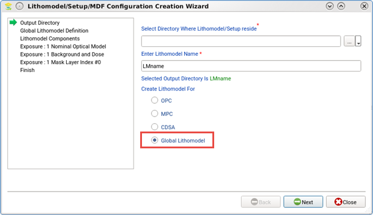
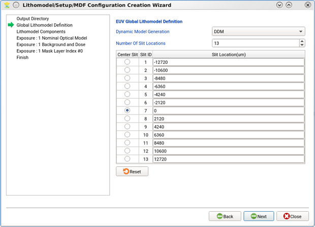
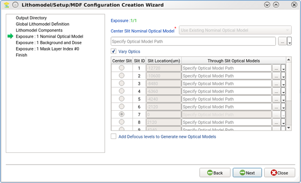
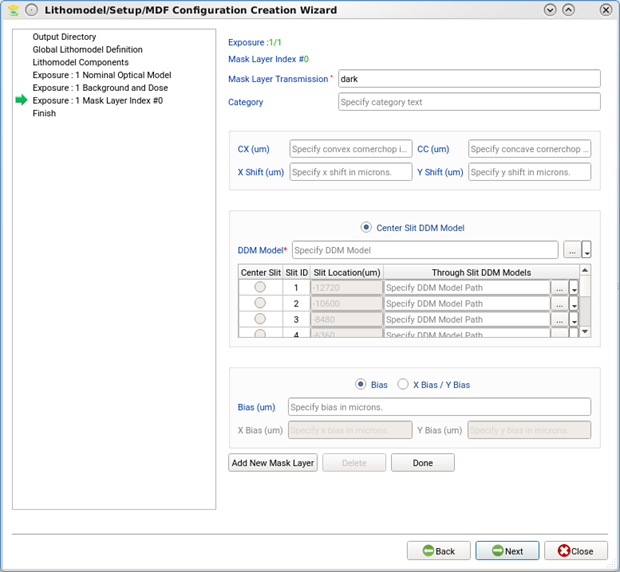

Calibre nmModelflow can be used to create
global litho models from existing optical models and DDM libraries.
Procedure
- Select File
> Create Lithomodel/Setup.
- Set the
litho model directory location and name. Make sure the Global Lithomodel
option is selected as shown.

- Use the
EUV Global Lithomodel Definition screen to set the number and position
of all the slits in the global litho model relative to the center
slit position.

- In the
Lithomodel Components page, specify the resist model, select the
EUV Model checkbox, then specify the flare model and flare map file.
- In the
Nominal Optical Model page, assign optical models for all slits.
The nominal optical model is used for the designated
center slit. Each additional optical model must have its model path
set in the Through-Slit Optical Models column.
Each optical model must be unique; you cannot reuse an optical
model for more than one slit.

- Specify
the background and dose using the standard Background and Dose page.
The same background and dose value is used for all slits.
- Specify
DDM models in the Mask Layer Index page.
For global litho models, each slit must have a unique
DDM model.

- Verify
that the information is correct for the new global litho model on
the Finish page before clicking Finish.
Results
A new litho model is added to the Litho Model list in the Database
Browser. (Calibre nmModelflow does not differentiate between litho
models and global litho models in the list.)